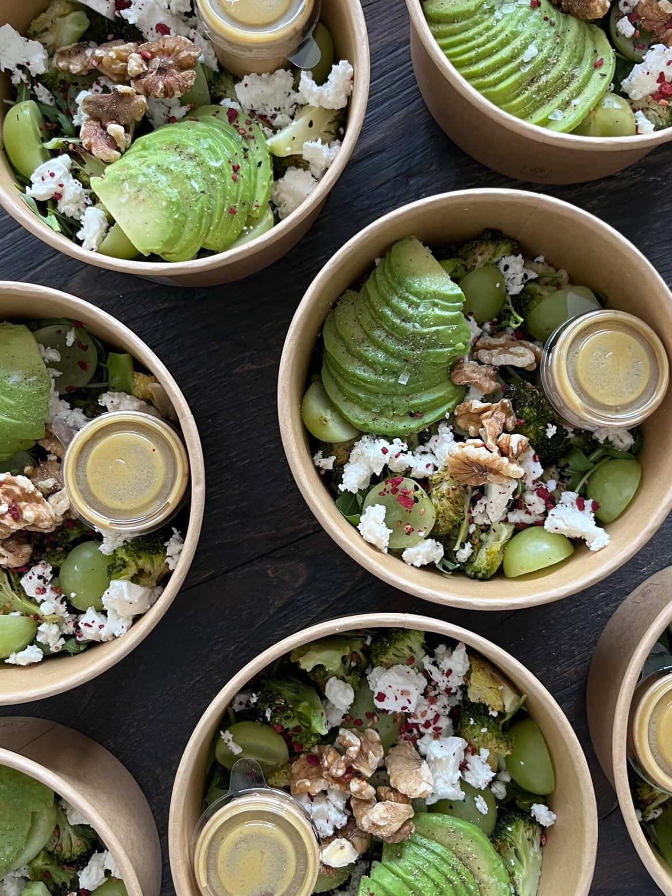
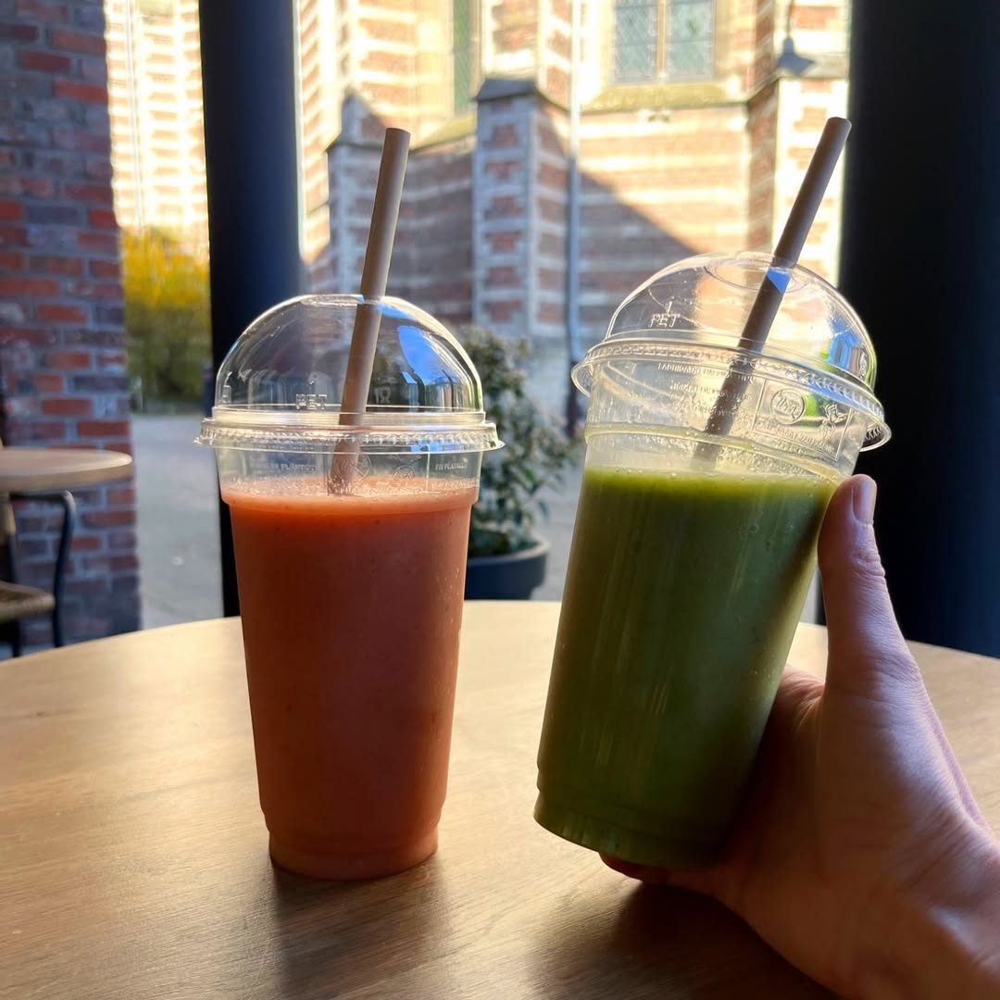
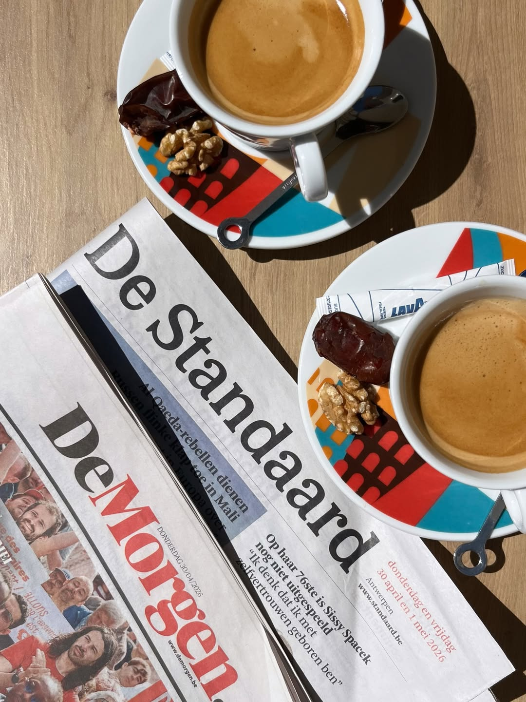
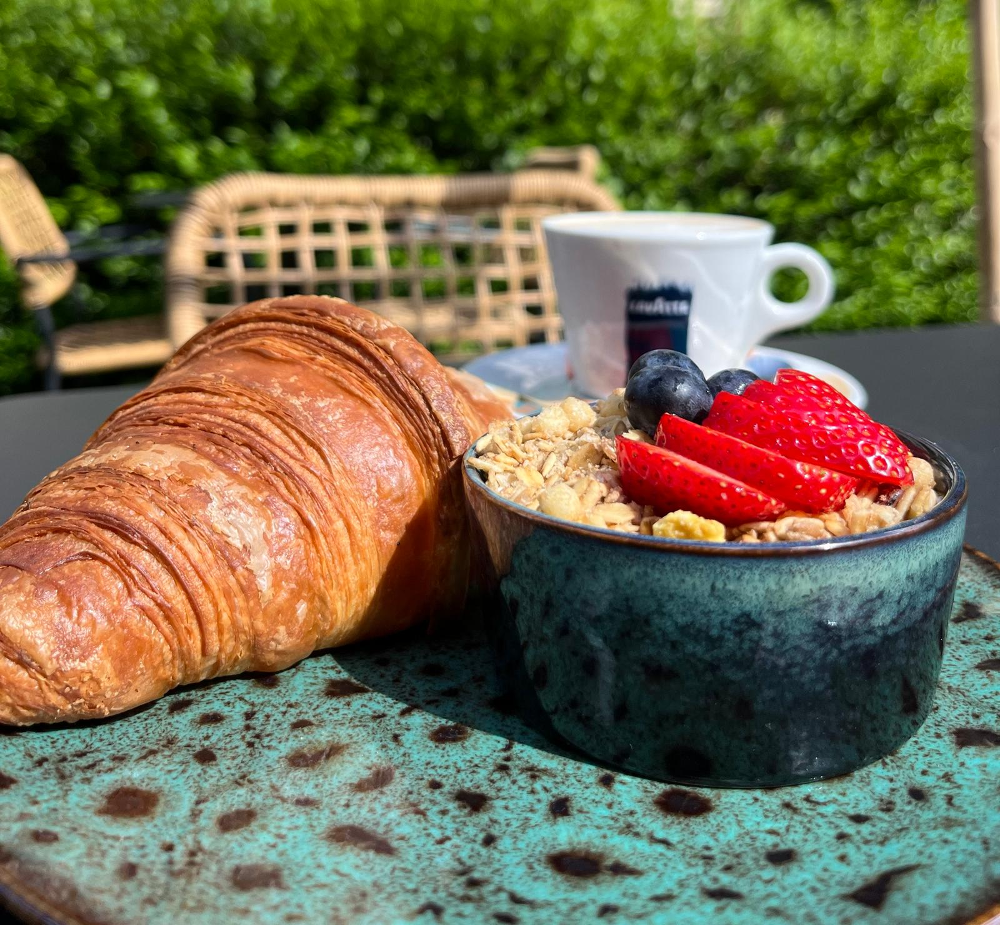
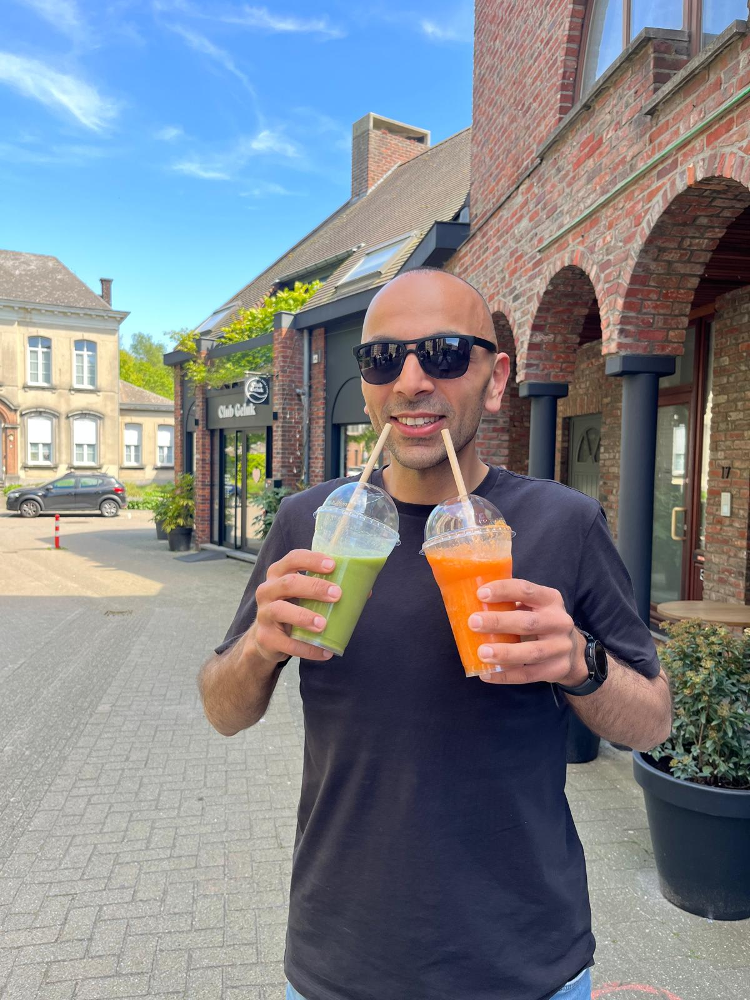
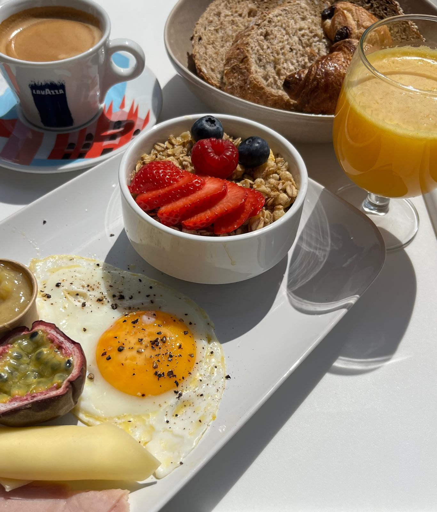

Handgemaakte bowls, voedzaam ontbijt, heerlijke toasts en verse smoothies — elke dag met liefde bereid.
Vers, gezond & vol smaak
Bij Novée staan versheid en kwaliteit centraal — van de eerste hap tot de laatste slok.
100% Vers
Elke dag verse bereiding met zorgvuldig geselecteerde ingrediënten. Geen compromissen op kwaliteit.
Met passie gemaakt
Elke bowl, elke toast, elk kopje koffie — bereid met echte aandacht en liefde voor het product.
Voor iedereen
Glutenvrije en lactosevrije opties beschikbaar. Allergieën? Vraag ons gerust — we denken graag mee.
Een kijkje in Novée






Happy hour smoothies
Elke vrijdag van 15:00 tot 16:00 geniet je van 2 smoothies voor de prijs van één. Het perfecte moment om even te pauzeren en samen iets vers te drinken.
Hobby café
Elke donderdag vanaf 14:00 zetten we de deuren open voor ons hobby café. Breng je hobby mee en geniet van gezellig samen zijn met andere hobbygenoten.
